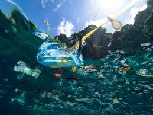
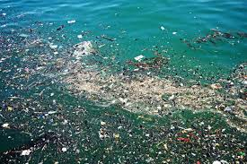
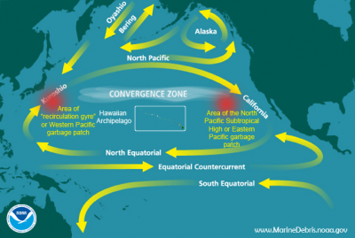

What Is The Great Pacific Garbage Patch?
The Great Pacific Garbage Patch is a landmark of marine debris partices in the central North Pacific Ocean. It is the largest of five offshore plastic accumulation zones in the world's oceans. It covers an estimated surface area of 1.6 million square kilometers where floating trash objects remain by being brought from either the currents or wind.
 
How Did The Great Pacific Garbage Patch Form?
The Great Garbage Patch was and still is created by the North Pacific Gyre. A gyre is a system of ciculating currents in the ocean, caused by the Coriolis Effect (makes things traveling long distances around the Earth to move at a curve instead of a straight line). Most of the debris comes from land-based sources like plastic because it cannot biodegrade quickly. The harm and damage can come when the gyres spit out debris that accumulates in them over time at beaches or near ports and so eventually the plastic could end up back in our own hands. The best solution to this is to stop feeding the Garbage Patch with plastic and stop litter at the source.
